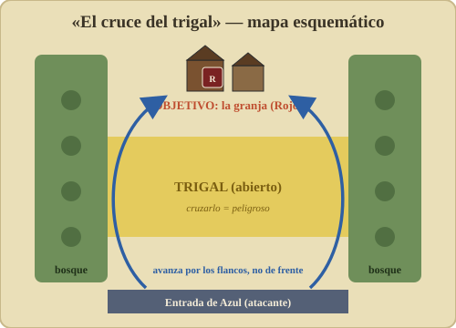

13 – Escenario de práctica: «El cruce del trigal»¶
⟵ Solitario · Índice · Siguiente: Recursos ⟶
Este es un escenario original pensado para tu primera partida, solo con infantería. No reproduce ningún escenario oficial: está diseñado desde cero para que practiques movimiento, fuego, moral y avance sin abrumarte. Es ideal para jugar en solitario.
Materiales: te vale cualquier tablero de Squad Leader (o uno improvisado) que tenga un edificio o grupo de edificios (el objetivo), una franja de terreno abierto / trigal delante, y algo de bosque o setos a los lados como cobertura. Las distancias que doy son aproximadas; ajústalas a tu mapa.
La situación¶
Un pelotón reforzado ataca (lo llamaremos Azul) para tomar una pequeña granja (uno o dos hexes de edificio) defendida por un puñado de hombres (Rojo). Entre el atacante y la granja hay un trigal abierto: cruzarlo es el problema.

Fuerzas (genéricas — usa las fichas que tengas)¶
Azul (atacante):
- 3 pelotones de infantería (de potencia/moral media; p. ej. tipo "4-6-7").
- 1 líder (p. ej. "9-1").
- 1 ametralladora (LMG/MMG).
Rojo (defensor):
- 2 pelotones de infantería.
- 1 líder (p. ej. "8-0").
- 1 ametralladora.
El atacante tiene ventaja numérica (lo normal: atacar cuesta caro). Si quieres más reto para el atacante, dale al defensor un pelotón más o mejor cobertura.
Despliegue¶
- Rojo se despliega primero, oculto si juegas con ocultación: reparte sus unidades en y alrededor de la granja (objetivo). Lo lógico: la MG + un líder en el edificio batiendo el trigal; un pelotón en cobertura a un flanco.
- Azul entra por el borde opuesto (al otro lado del trigal), o se despliega en la línea de bosque/setos de su lado.
Reglas del escenario¶
- Duración: 6 turnos de juego.
- Iniciativa: empieza Azul (es quien ataca).
- Solo infantería y armas de apoyo. Sin carros ni artillería.
- Usa todas las reglas de los capítulos 02 a 06.
Condiciones de victoria¶
- Azul gana si al final del turno 6 tiene al menos un pelotón en buena orden dentro de la granja y no hay defensores en buena orden en ella.
- Rojo gana en cualquier otro caso (si aguanta la granja o si rompe el ataque).
Tutorial: cómo afrontarlo (comentado)¶
No te voy a dar "la solución" (cada partida es distinta), sino cómo pensar cada fase, aplicando lo aprendido. Sigue la secuencia.
Turno 1 — Tantear y colocar fuego¶
- Azul: no cruces el trigal todavía. En fuego preparado, coloca tu MG + líder en un buen sitio con LOS a la granja y empieza a hostigar al defensor (forzar chequeos de moral). Con el resto, muévete por los flancos usando bosque/setos, sin exponerte al trigal.
- Rojo (defensor): guarda tu fuego. Tus blancos aún están a cubierto; no malgastes disparos. (Si juegas con el "cerebro automático" del cap. 12, no habrá ningún disparo bueno → no dispara.)
Turno 2 — Ablandar al defensor¶
- Azul: sigue fijando con la MG. Si has llevado un pelotón a un flanco con LOS, combina fuego para romper a un defensor. Cada defensor roto es un fusil menos batiendo el trigal.
- Rojo: ahora sí, si un pelotón Azul asoma al trigal en movimiento, dispárale (blanco en movimiento al descubierto = tu mejor oportunidad).
Turno 3 — El cruce (con cobertura o humo)¶
- Azul: este es el momento crítico. Si tienes mortero con humo, ciega la LOS de la MG enemiga y cruza el trigal. Si no, cruza por donde menos te vea el defensor, y deja el último hex para la fase de avance (que no provoca fuego). Recuerda: dispérsate, no cruces apilado.
- Rojo: dispara a quien cruce. Aquí decides el escenario: ¿gastas tu MG en el primer pelotón o esperas al grueso?
Turnos 4–5 — Llegar al edificio y asaltar¶
- Azul: con tus pelotones ya cerca, usa la fase de avance para entrar en el hex de la granja y desencadenar el combate cuerpo a cuerpo: el fuego rara vez echa a quien está en un edificio, hay que asaltarlo. Lleva tu líder al asalto.
- Rojo: si te están desalojando, contraataca en cuerpo a cuerpo o repliega a un segundo edificio si lo hay.
Turno 6 — Decisión¶
- Cuenta: ¿hay un pelotón Azul en buena orden en la granja y ningún Rojo en buena orden ahí? Azul gana. Si Rojo aguanta aunque sea con un medio pelotón, resiste.
Qué deberías haber aprendido¶
- No se cruza terreno abierto sin preparación: primero fijas/rompes al defensor con fuego, luego cruzas con humo o por cobertura, y el último salto en fase de avance.
- Combinar fuego rompe; disparar suelto, no.
- Los edificios se toman cuerpo a cuerpo, no a tiros.
- El defensor vive de guardar sus disparos para el momento de máxima exposición.
Variantes para repetirlo: añade un pelotón a cada bando; da humo al atacante; o cambia el objetivo (que Azul deba salir X pelotones por el borde de Rojo en vez de tomar la granja). Cada variante enseña algo distinto.